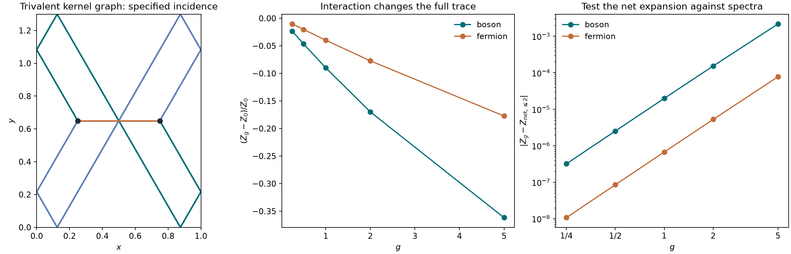
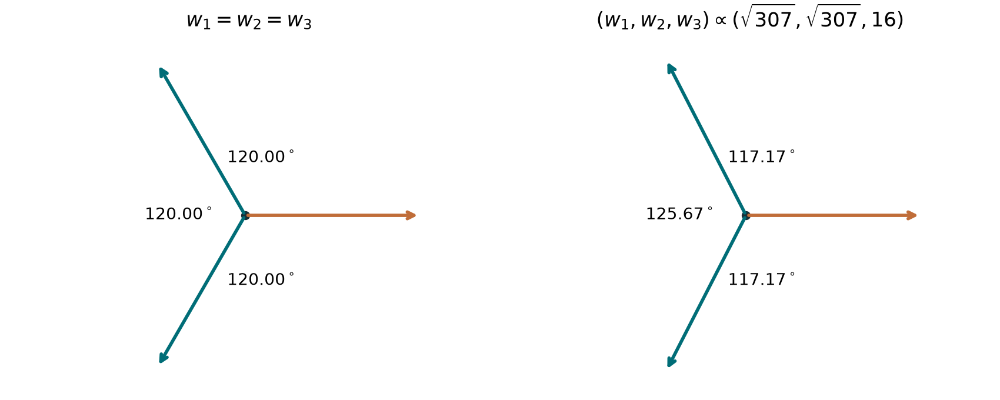

Mathematical toy models · no conjecture asserted
What assigns a spectral
contribution to a node?
The intended target uses exact Euclidean or hyperbolic geodesic nets and Laplace-type operators that are free between nodes. A drawing of crossing paths does not specify whether, or how, a node contributes to a trace. The operator or matching rule must supply that information.
The earlier rectangle identity is a proved contact-insertion identity, not a proved potential-free many-body/net correspondence. New tests below distinguish the free baseline from an explicitly coupled control model. No new general conjecture is made.
01 / Geometric setup
Free edges, prescribed junction rules
In a Euclidean domain the edges of a geodesic net are straight segments between junctions and boundary events. In a hyperbolic domain they are hyperbolic geodesic segments. For the ordinary length functional, an interior node is stationary when
where \(T_a(v)\) are outward unit tangents and \(w_a\) are the edge weights. Three equal weights give angles \(2\pi/3\). A billiard interpretation also requires the prescribed boundary reflection law; a fixed-anchor net instead has fixed endpoints. These are different boundary problems.
Hyperbolic geometry can be represented exactly using isometries and algebraic coordinates. Its lengths often involve logarithms or inverse hyperbolic functions, rather than algebraic numbers. For instance, for a hyperbolic matrix \(A\in\operatorname{PSL}_2(\mathbb R)\),
See the length–trace relation in Petri and Walker. Exact edge geometry does not alone prove an exact spectral trace formula for an arbitrary domain.
02 / Formal baseline, valid in both geometries
What the uncoupled many-particle Laplacian contains
Let \(h=-\Delta_\Omega\) be any self-adjoint one-particle Laplacian with discrete spectrum and finite heat trace \(K(t)=\operatorname{Tr}e^{-th}\). For \(H_N^0=\sum_{j=1}^N h_j\), its symmetric or antisymmetric heat trace is
In particular, \(Z_2^\pm=(K(\beta)^2\pm K(2\beta))/2\). The many-particle eigenvalues are sums of one-particle eigenvalues, with repetitions allowed or excluded according to symmetry.
Proof
Insert the symmetric or antisymmetric permutation projector into the tensor-product heat trace. Each permutation cycle of length \(j\) contracts, by the heat semigroup identity, to \(K(j\beta)\). Count permutations of a given cycle type and include their signs. This proof does not use flatness, separability, or a potential, so it applies equally to compact Euclidean and hyperbolic settings with the stated spectral assumptions.
This standard free trace has permutation cycles and does not introduce a branching node law. An alternative net identity is not ruled out, but it would have to reduce to this spectral information. A pure-Laplacian model with additional geometric matching at nodes is a different operator and needs its matching conditions specified and checked.
The script separately compares occupation-number sums with cycle sums for symmetric and antisymmetric states, particle counts \(2,3,4\), two bounded planar rectangles, and three inverse temperatures: a total of \(36\) comparisons. The raw values and cutoffs are recorded in the JSON.
03 / What a trivalent picture does and does not mean
Geometry and operator incidence are separate data
The previous equal-tension four-valent example is locally a crossing: four unit tangents summing to zero in a plane necessarily occur in opposite pairs. Hence its geometry cannot by itself distinguish two free paths crossing from an assigned interaction event.
One way to obtain a trivalent graph is to put a third kernel edge between two particle-path locations. Each endpoint then has two particle-path incidences and one extra incidence. This is a mathematical factorization of a chosen pair kernel; it is not a reason that an uncoupled Laplacian should contain such nodes.
For comparison, an explicit three-edge reflected net exists in the algebraic rectangle
Take two reflected paths with lifted displacements \((-3/2,\pm3\sqrt3/2)\) and a direct segment of displacement \((1/2,0)\). Their lengths are \(3,3,1/2\). Their outward unit tangents sum to zero at both vertices, giving genuine three-way angles \(2\pi/3\); no path hits a corner. Other visible crossings in the immersion are not automatically assigned a junction by the operator.
This proves that exact trivalent geometry is available. It does not yet assign it a coefficient in the potential-free spectral trace.
04 / Explicitly coupled mathematical control
Testing an expansion against full interacting matrices
Choose the smooth, bounded Neumann heat kernel \(W_\sigma(x,y)=K_\sigma^{\rm N}(x,y)\), with fixed \(\sigma>0\), and let
This is a mathematical two-coordinate toy operator. The coupling and smoothing parameters are explicitly chosen, and no zero-range limit or physical mediator is assumed. At an insertion there are two Dirichlet path edges and one Neumann kernel edge. The latter is the extra structure that makes the trivalent diagram interaction-dependent.
What was tested
- Four graph types: first- and second-order direct and exchange terms. One second-order exchange graph is the complete graph on four vertices.
- Three bounded rectangles, including a square and the algebraic rectangle above; varying inverse temperatures and fixed smoothing parameters.
- Independent discrete reflected-net sums and sine/cosine spectral contractions: twelve fixed-time graph checks.
- Full two-coordinate Hamiltonian diagonalization at mode cutoffs \(4,6,8\), for both symmetry choices and couplings \(1/4,1/2,1,2,5\).
The maximum fixed-time graph discrepancy is approximately \(3.1\times10^{-16}\). At the largest cutoff, the first two net coefficients for the symmetric model are
They use \(Q=(0,1)\times(0,3/2)\), \(\beta=0.1\), and \(\sigma=0.04\). Independent matrix coefficients agree to about \(3\times10^{-12}\) in second order. At \(g=1\), the full finite-matrix trace is \(0.07743889011628384\), while the second-order net approximation is \(0.07745883738355698\). Their difference is approximately \(2.0\times10^{-5}\); agreement of coefficients must not be mistaken for an exact finite-order trace.
At this coupling, changing the one-particle mode cutoff from \(6\) to \(8\) changes the full symmetric matrix trace by about \(2.4\times10^{-9}\). This is observed cutoff stabilization, not a rigorous continuum error certificate.

Formal checks for this control
The earlier rectangle graph identity extends when every vertex has an even number of incident Dirichlet edges, while the remaining edges carry Neumann kernels. Reflection of a vertex changes the sign once per Dirichlet incidence and leaves Neumann incidences unchanged. Thus the same doubled-torus and integer-flow proof applies. The sign character is the product of image signs over Dirichlet edges only. This covers the trivalent graphs with two Dirichlet and one Neumann incidence at each node. Primitive integer flow lattices, including their parity constraints, are used in the implementation.
Boundedness of \(W_\sigma\) gives the convergent Duhamel trace expansion. For \(g\geq0\), because \(W_\sigma\geq0\), a remainder after order \(p\) satisfies
Iterate Duhamel, bound each insertion in operator norm, and apply Schatten Hölder to the heat factors. The interacting heat factor has trace norm bounded by its free counterpart at the corresponding Hölder exponent, by the min–max principle. Integrating over the time simplex gives the factorial. This is a bound on the grouped expansion; it does not permit arbitrary termwise rearrangement of signed winding sectors near zero edge durations. Fourier-cutoff and numerical time-quadrature errors remain separate.
A constant-kernel negative control gives \(Z_g=e^{-\beta g/|Q|}Z_0\) while leaving all path geometry unchanged. It confirms that a geometric picture alone cannot identify a coupling.
05 / Unequal weights: a checked variant
Changing an edge kernel changes the stationary angles
For a weighted length functional, the junction condition and its angle law are
Square the identity \(w_iT_i+w_jT_j=-w_kT_k\) to obtain the cosine law. A nondegenerate three-way balance requires strict triangle inequalities among the weights. This is the local weighted Fermat condition in either Euclidean or hyperbolic geometry; compare the weighted Fermat triangle problem.
A scalar coefficient \(g\) at an interaction insertion multiplies that fixed graph's amplitude. It does not by itself change the stationary edge action. In the explicitly coupled control above, changing the kernel parameter \(\sigma\) changes the operator's interaction term and the action of its extra edge.
Use the same algebraic rectangle of height \(H=3\sqrt3/4\). Put two vertices at the midline, a horizontal distance \(d\) apart. The two reflected Dirichlet paths have lifted displacements \((d-2,\pm2H)\); the Neumann kernel edge has displacement \((d,0)\). At fixed heat time \(\beta\), their exact lifted Gaussian action is
The formula for \(d\) follows by differentiating. The corresponding stationary weights are
These are the first-variation coefficients of the quadratic action at its stationary net. The quadratic action is not globally the same functional as a weighted total length with fixed coefficients.
At \(\beta=0.12\), the parameter \(\sigma=0.02\) gives \(d=1/2\) and equal weights, hence three angles \(120^\circ\). Changing only the interaction kernel to \(\sigma=0.03\) gives the exact vertices
and weights proportional to \((\sqrt{307},\sqrt{307},16)\). Consequently

The independent discrete-net and sine/cosine evaluations of the exchange graph are respectively \(0.029024838477042923\) and \(0.02902483847704288\) in the unequal-weight case. Their observed difference is below \(5\times10^{-17}\); the vector-balance residual is below \(2\times10^{-15}\). The equal-weight case is checked separately in the results file.
Complete comparison · Reproducible source. Run python3 scripts/weighted_node.py after installing the research requirements.
06 / Research status
What remains to be identified
The geometric target is now free Euclidean or hyperbolic edges with explicit node and boundary rules. No exact pure-Laplacian trace formula for ordinary three-valent nets has been established here. The unresolved mathematical choice is the operator or trace functional that assigns a nontrivial coefficient to such a node. It may require a Laplacian on a geometrically joined configuration space, or a higher kernel functional rather than the ordinary heat trace. Those are alternatives to investigate, not conclusions or conjectures.
Earlier exact rectangle contact-insertion identity · All control and free-baseline results · Reproducible source
python3 -m pip install -r research-requirements.txt python3 scripts/trivalent_toy.py